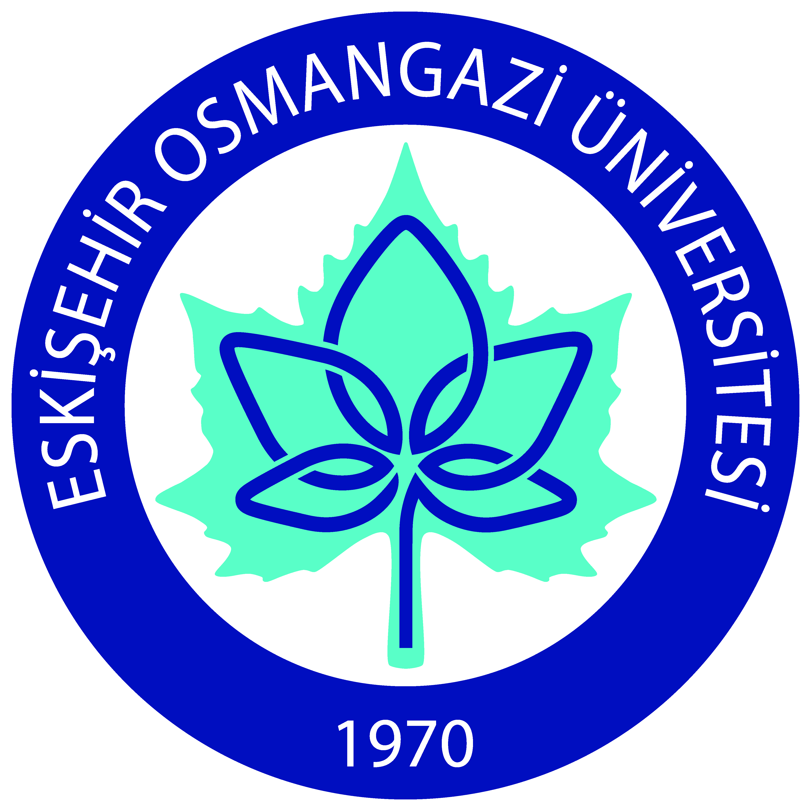

Fakültelerimizde Öğrenci Projeleri ve Yarışmaları
Dr. Öğr. Üyesi Gökçe Mehmet AY - Öğrenci Projeler Koordinatörü
Diş Hekimliği
Eğitim
Fen
Hukuk
İktisadi ve İdari
İlahiyat
İnsan & Toplum
Mühendislik & Mimarlık
Sağlık Bilimleri
Sanat & Tasarım
Tıp
Turizm
Ziraat
İnterdisipliner
Diş Hekimliği Fakültesi
Proje Yapmanın Önemi
Bilimsel araştırma becerilerinin geliştirilmesi
Yeni tedavi yöntemlerinin keşfi
Uluslararası standartlarda eğitim
Akademik kariyer fırsatları
Hasta bakımında kalite artışı
Etkinlikler
Uluslararası Diş Hekimleri Birliği (IADS) Araştırma Yarışması:
Dünya çapında diş hekimliği öğrencilerinin araştırmalarını sunması.
Detaylar
ADEE Diş Eğitiminde Mükemmeliyet Ödülleri:
Avrupa Diş Eğitimi Birliği tarafından düzenlenir.
Detaylar
ve
Program
Eğitim Fakültesi
Proje Yapmanın Önemi
Eğitimde yenilikçi yöntemlerin geliştirilmesi
Öğretmen adaylarının pratik deneyim kazanması
Eğitim teknolojilerinin etkin kullanımı
Öğrenci başarısının artırılması
Toplumsal katkı ve farkındalık oluşturma
Etkinlikler
UNESCO Institute for Information Technologies in Education:
Beijing Normal University (BNU) ve UNESCO işbirliği.
Detaylar
Teknofest Eğitim Teknolojileri Yarışması:
Yenilikçi öğretim stratejilerinin paylaşılması.
Detaylar
Fen Fakültesi
Proje Yapmanın Önemi
Temel bilimlerde derinlemesine araştırma
Bilimsel düşünce ve problem çözme becerilerinin geliştirilmesi
Yeni teknolojilerin ve keşiflerin önünü açma
Uluslararası bilimsel camiada yer alma
Akademik ve endüstriyel kariyer fırsatları
Etkinlikler
Uluslararası Matematik Yarışması (IMC):
Üniversite öğrencileri arasında matematik yeteneklerinin ölçülmesi.
Detaylar
Uluslararası Fizikçiler Turnuvası (IPT):
Fizik öğrencilerinin bilimsel tartışma becerilerini geliştirme.
Detaylar
Hukuk Fakültesi
Proje Yapmanın Önemi
Hukuki analiz ve yorum becerilerinin geliştirilmesi
Güncel hukuki meselelerin incelenmesi
Adalet sistemine katkı sağlama
Uluslararası hukuk bilgisinin artırılması
Mesleki etik ve sorumluluk bilinci
Etkinlikler
Philip C. Jessup Uluslararası Hukuk Moot Court Yarışması:
Dava sunum becerilerini geliştirme.
Detaylar
Willem C. Vis Uluslararası Ticari Tahkim Moot Yarışması:
Uluslararası ticari hukuk ve tahkim konularını kapsar.
Detaylar
İktisadi ve İdari Bilimler Fakültesi
Proje Yapmanın Önemi
Ekonomik analiz ve stratejik düşünme becerileri
Güncel ekonomik ve idari sorunların çözümü
İş dünyası ile bağlantı kurma
Girişimcilik ve liderlik yetenekleri
Politika geliştirme ve uygulama
Etkinlikler
CFA Institute Araştırma Yarışması:
Finansal analiz deneyimi sunar.
Detaylar
Teknofest Finansal Teknolojiler Yarışması:
Finans alanında inovatif projeler.
Detaylar
İlahiyat Fakültesi
Proje Yapmanın Önemi
Teolojik araştırmaların derinleştirilmesi
Kültürel ve dini değerlerin anlaşılması
Toplumsal barış ve hoşgörüye katkı
Dinler arası diyalogun geliştirilmesi
Akademik kariyer ve uzmanlaşma
Etkinlikler
Dinler arası diyalog ve işbirliği yarışması:
Dünya barışına katkı.
Detaylar
Uluslararası Teolojik Makale Yarışması:
Teolojik konularda akademik araştırma.
Detaylar
İnsan ve Toplum Bilimleri Fakültesi
Proje Yapmanın Önemi
Toplumsal sorunların analiz edilmesi
Kültürel ve sosyal araştırmaların yapılması
İnsan davranışlarının incelenmesi
Politika ve strateji geliştirme
Toplumsal farkındalığın artırılması
Etkinlikler
Dünya Üniversiteleri Münazara Şampiyonası (WUDC):
Eleştirel düşünme ve hitabet becerilerini geliştirme.
Detaylar
Model Birleşmiş Milletler (MUN) Konferansları:
Diplomasi ve uluslararası ilişkiler simülasyonu.
Detaylar
Mühendislik ve Mimarlık Fakültesi
Proje Yapmanın Önemi
Uygulamalı mühendislik ve tasarım becerileri
Teknolojik inovasyon ve geliştirme
Sürdürülebilir ve estetik yapıların tasarımı
Endüstri ile işbirliği fırsatları
Problem çözme ve proje yönetimi
Etkinlikler
Formula Student / Formula SAE:
Yarış arabası tasarımı ve üretimi.
Detaylar
Shell Eco-marathon:
Enerji verimli araç tasarımı.
Detaylar
Sağlık Bilimleri Fakültesi
Proje Yapmanın Önemi
Toplum sağlığının geliştirilmesi
Yeni tedavi ve bakım yöntemlerinin araştırılması
Sağlık politikalarının oluşturulması
Klinik deneyim ve uygulama becerileri
Multidisipliner çalışma yeteneği
Etkinlikler
Uluslararası Tıp Turnuvası:
Tıp öğrencilerinin klinik vaka çözümü üzerine rekabeti.
Detaylar
Uluslararası Vaka Çalışması Yarışması 2024:
Küresel sağlık sorunlarına yönelik yenilikçi çözümler.
Detaylar
Sanat ve Tasarım Fakültesi
Proje Yapmanın Önemi
Yaratıcılık ve estetik becerilerin geliştirilmesi
Kültürel ve sanatsal değerlerin korunması
Yenilikçi tasarım ve konseptlerin oluşturulması
Uluslararası sanat camiasında yer alma
Kişisel ve profesyonel portföy oluşturma
Etkinlikler
Red Dot Tasarım Ödülü:
Üstün tasarım ve inovasyonun tanınması.
Detaylar
A' Design Award & Competition:
Çok disiplinli tasarım yarışması.
Detaylar
Tıp Fakültesi
Proje Yapmanın Önemi
Tıbbi araştırma ve inovasyon
Hasta bakımının iyileştirilmesi
Klinik becerilerin geliştirilmesi
Halk sağlığına katkı
Akademik kariyer ve uzmanlaşma
Etkinlikler
HealthSense Öğrenci Ödülü:
Tıp ve sağlık bilimleri öğrencileri için makale yarışması.
Detaylar
The Student Voice Prize 2024:
Nadir hastalıklar konusunda farkındalık oluşturma.
Detaylar
Turizm Fakültesi
Proje Yapmanın Önemi
Turizm sektöründe yenilikçi uygulamalar
Hizmet kalitesinin artırılması
Sürdürülebilir turizm politikaları
Kültürel mirasın tanıtılması
Uluslararası network ve işbirlikleri
Etkinlikler
European Mise en Place Cup (EMCup):
Konaklama yönetimi öğrencileri için yarışma.
Detaylar
UNWTO Öğrenci Ligi:
Turizm sektörünün gerçek sorunlarına çözümler.
Detaylar
Ziraat Fakültesi
Proje Yapmanın Önemi
Tarımsal üretimde verimliliğin artırılması
Sürdürülebilir tarım uygulamaları
Gıda güvenliği ve kalitesinin sağlanması
Çevre ve doğal kaynakların korunması
Tarım teknolojilerinin geliştirilmesi
Etkinlikler
Alltech Genç Bilim İnsanı Yarışması:
Tarım bilimlerinde yenilikçi araştırmalar.
Detaylar
IFAMA Öğrenci Vaka Yarışması:
Tarım ve gıda sektöründeki gerçek dünya sorunlarına odaklı vaka analizi.
Detaylar
İnterdisipliner Çalışmanın Önemi
Avantajları
Farklı disiplinlerden bakış açıları
Karmaşık problemlerin çözümü
Yenilikçi ve yaratıcı sonuçlar
Ekip çalışması ve iletişim becerileri
Akademik ve profesyonel gelişim
Başarılı Projeler
Teknoloji ve sağlık alanında ortak projeler
Mühendislik ve tasarım işbirlikleri
Sosyal bilimler ve hukuk alanında araştırmalar
Eğitim ve psikoloji disiplinlerinin entegrasyonu
Tarım ve çevre bilimleri projeleri
Sonuç
İnterdisipliner çalışmalara aktif katılım sağlayın.
Fakülteler arası iletişimi güçlendirmek için inisiyatif alın.
Ortak projeler için fırsatları değerlendirin ve kaynakları kullanın.
Yarışmalara katılarak kendinizi geliştirin ve deneyim kazanın.
Üniversitemizi ulusal ve uluslararası platformlarda en iyi şekilde temsil edin.